地政学
レシフェは北東部沿岸の州都で、港と空港、州政府、連邦機関が海路と内陸を結ぶ要です。砂糖植民地、オランダ支配、共和国運動の記憶も重なり、ブラジルの大西洋政治を読む入口になります。地方格差の議論も見えます。
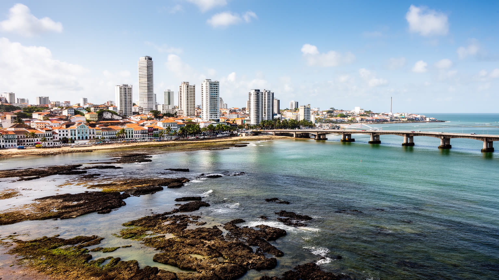
🇧🇷 ブラジル / 南米 / World City Atlas
大西洋の環礁と河口に築かれたペルナンブーコ州都。橋、港、旧オランダ街、オリンダの丘、技術産業、マングローブ、フレヴォの祝祭が近距離で重なります。
都市の骨格
レシフェは「ブラジルのヴェネツィア」と呼ばれる水の都市ですが、絵になる橋だけでは読めません。港、島状の旧市街、海岸の高層住宅、マングローブ、低地の浸水、技術産業と不平等が同じ地図にあります。
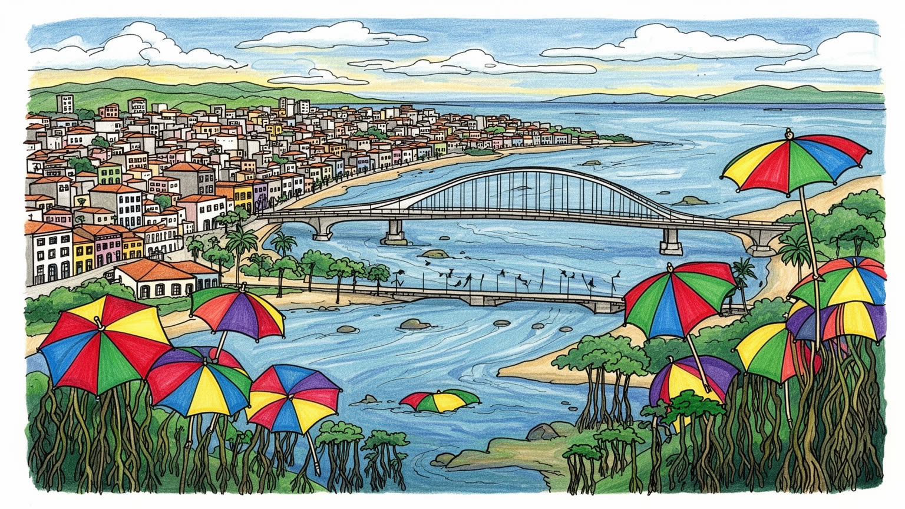
レシフェは北東部沿岸の州都で、港と空港、州政府、連邦機関が海路と内陸を結ぶ要です。砂糖植民地、オランダ支配、共和国運動の記憶も重なり、ブラジルの大西洋政治を読む入口になります。地方格差の議論も見えます。
港湾、医療、教育、行政、情報技術、観光、建設、小売が雇用を支えます。ポルト・デジタルの専門職と、露店、清掃、バス、港湾、家事労働の現場が近く、所得差と通勤条件が都市経済を左右します。若者の機会も課題です。
フレヴォ、マラカトゥ、カーニバル、カトリック行列、アフロブラジル信仰、文学、映画が街の暦を作ります。オリンダの丘や旧市街の教会は観光地である前に、地域の記憶と祈りの場所です。路上芸能も続きますよ。
観光客はボア・ヴィアージェン、レシフェ・アンティゴ、オリンダを巡りますが、住民の日常はバス、橋、雨、学校、治安、家賃、海岸の余暇と結びつきます。水辺の美しさと暮らしの脆さが同居します。市場も近いです。
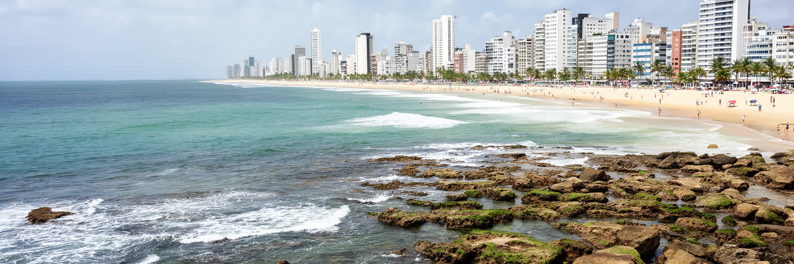
レシフェという名は、沖合に連なる礁に由来します。礁が波を弱め、河口と島状の低地が港を作り、橋が市街を結んできました。カピバリベ川とベベリベ川が大西洋へ注ぐ周辺には、旧市街、港、行政、商業、住宅、マングローブが密接に並びます。地図では細い水路に見えても、住民には通勤の橋、雨の日の渋滞、漁や露店の場所、涼しい風の通り道として経験されます。海岸のボア・ヴィアージェンには高層住宅、ホテル、遊歩道、商業施設が並び、内陸側には市場、バスターミナル、学校、低所得地区が広がります。水辺は都市の魅力である一方、低地の浸水、排水不足、潮位、豪雨、海岸侵食を通じて生活の弱点にもなります。レシフェを読むには、青い海や橋の美しさだけでなく、どの橋が誰の通勤を支え、どの水路がどの地区を分け、どの堤防や排水路が暮らしを守っているのかを見る必要があります。礁と河口は風景ではなく、都市の成り立ち、経済、災害リスクを同時に決める骨格です。さらに水辺は社会の距離も映します。海に近い高層住宅は風と眺望を得るが、川沿いの低地では雨のたびに家財や通学路が脅かされます。港へ向かう道、海岸へ向かうバス、島を結ぶ橋を重ねて見ると、レシフェの地理は観光地図よりずっと細かい生活の地図になります。水の近さは、誇りであると同時に日々の管理責任でもあります。そこで生活の知恵が問われます。
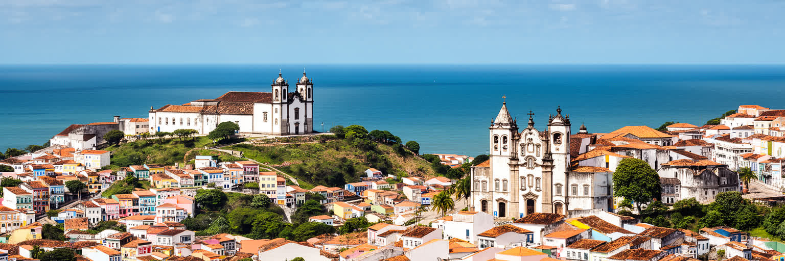
レシフェの歴史は、隣接するオリンダと切り離せません。丘の上のオリンダは植民地期の教会、修道院、色彩豊かな家並みを残し、砂糖経済とカトリック支配の記憶を抱えます。低地のレシフェは港として発展し、十七世紀にはオランダ支配下で要塞、運河、商業、宗教的寛容の経験を持ちました。旧市街のレシフェ・アンティゴには倉庫、広場、教会、シナゴーグの記憶、港湾施設が重なり、ブラジル北東部が大西洋世界と結ばれた痕跡を歩けます。ですが遺産は美しい建物だけではありません。砂糖農園の富、奴隷制、黒人住民の抵抗、ユダヤ人共同体、オランダとポルトガルの権力争いが、都市の形を作りました。観光客が石畳やカーニバルの人形を楽しむとき、その背後には土地所有、保存整備、家賃、治安、住民の立ち退き、文化の商業化の問題もあります。オリンダとレシフェを一つの歴史圏として見ると、丘と港、祈りと商業、暴力と祝祭が互いに支え合って都市の記憶を作ってきたことが分かります。保存された教会や広場は過去を閉じ込める箱ではなく、現在の礼拝、結婚式、露店、音楽、学校見学に使われる場所です。遺産を生きた都市として保つには、建物の色だけでなく、住む人、働く人、祈る人が残れる条件を整える必要があります。歴史地区の価値は、写真に残る外観よりも、人が使い続ける公共性にあります。記憶は日々の利用で残ります。
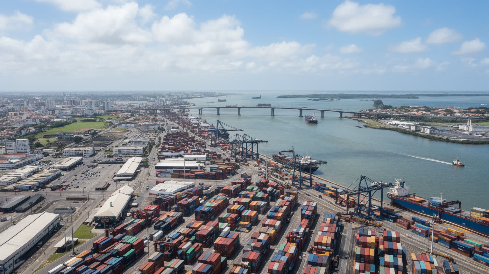
レシフェの経済は、海岸リゾートや旧市街観光だけで成り立つわけではありません。港は砂糖、綿、工業製品、食料、燃料、建材、コンテナを扱ってきた歴史を持ち、現在も州都の流通と企業活動を支えます。近郊にはスアペ港と工業団地があり、石油化学、造船、物流、製造業の広域経済がレシフェのサービス、金融、教育、行政と結びつきます。市内では病院、大学、法律、会計、広告、公共機関、小売、建設、飲食が多くの雇用を作ります。港湾とサービスの成長は都市に所得をもたらすが、仕事の質は一様ではありません。コンテナの荷役、倉庫、清掃、警備、配達、バス運転、露店、ホテル、家事労働は、都市の便利さを支えながら賃金や安定性で弱い立場に置かれやすいです。貨物の動きは道路混雑、騒音、排気、港周辺の土地利用にも影響します。レシフェを産業都市として見るなら、港のクレーンだけでなく、早朝の市場、病院の夜勤、橋を渡る通勤者、郊外から入るバスまで経済の一部として読む必要があります。州都機能も重要で、地方都市から患者、学生、行政手続き、企業相談が集まります。中心部のサービスが周辺自治体の生活を支えるほど、交通費と待ち時間は見えない負担になります。港の広域性と日常の労働を同時に見ると、レシフェの経済は海上物流と都市サービスの二本柱で動いています。成長の評価には、働く人が住める条件も含めたいです。
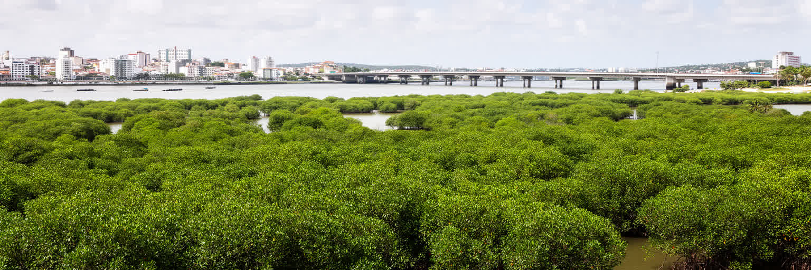
レシフェの水辺には、都市化された岸壁だけでなくマングローブが残ります。泥、潮、根、カニ、鳥、魚の生態系は、河口の浄化、防災、漁、食文化、気候緩和に関わります。ブラジルのマングビートがこの都市から生まれたことは象徴的で、マングローブは貧しい周縁ではなく、都市の創造力と生命力を示す場所として再解釈されました。ですが水路には汚水、廃棄物、埋め立て、道路建設、不法占拠、排水不足が重なり、自然と生活の境界は壊れやすいです。川沿いに住む低所得世帯は、水辺の景観を享受するより先に、浸水、蚊、悪臭、交通の不便、立ち退きの不安に向き合います。環境保護が住民排除につながれば、都市は水辺を美しくしても公正にはなりません。レシフェの水を読むことは、自然公園や橋を眺めることだけではなく、下水、廃棄物、湿地、魚市場、学校の環境教育、気候変動への備えを一緒に見ることです。マングローブは、都市が海と川に依存している事実を静かに示しています。水辺の再生には、植生の回復だけでなく、住民参加、代替住宅、公共交通、汚水処理、ゴミ収集の改善が要ります。生態系を守る政策が生活の不安を減らすとき、マングローブは観察対象ではなく都市の公共財として機能します。水路の健康は、レシフェの社会の健康でもあります。川をきれいにすることは、景観整備ではなく子どもの健康、漁の未来、雨の日の安心につながります。
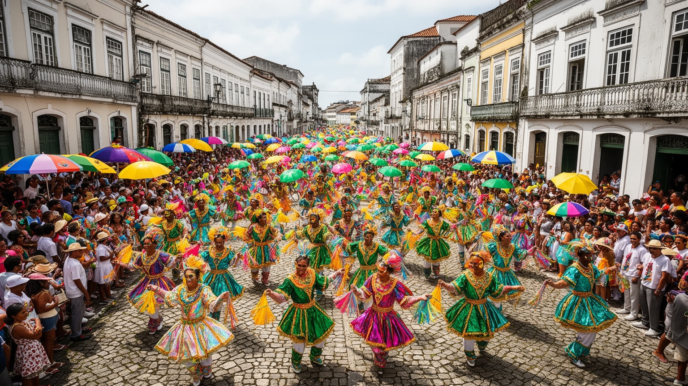
レシフェの文化を語るとき、フレヴォの速いステップと小さな傘は欠かせません。金管、打楽器、身体の跳躍は、カーニバルの熱気だけでなく、港町の労働、軍楽、カポエイラ、黒人文化、街路の競争から育ちました。マラカトゥ、ココ、サーキュラーなブロコ、巨大人形の行列、オリンダの坂道の祝祭も、地域ごとの記憶を街へ運びます。祭りは観光客に開かれた明るい時間である一方、準備、衣装、練習、警備、救急、清掃、交通規制、露店、音響、地域団体の資金調達によって支えられる大きな都市運営です。誰が中心の舞台に立てるのか、誰が混雑を受け止めるのか、誰が祭りの収益を得るのかという問題もあります。レシフェの音楽と踊りは、単なる娯楽ではなく、階層、人種、地区の誇りを公共空間で表す言語です。祭りのない日にも、学校、練習場、路地の打楽器、地域の記念行事にリズムは残ります。観光として楽しむほど、その音が生まれた生活と労働への敬意が必要になります。音楽は若者に表現の場を与えるが、楽器代、交通費、練習場所、夜間の安全、出演料の不安定さも抱えます。文化政策が観客数だけを追うと、地区の小さな団体や師弟関係は弱くなります。祝祭を支える日常を守ることが、レシフェの文化を次世代へ渡す条件です。踊る街は、支える人を忘れない時に深くなります。路上の音は共同体の記憶でもあります。
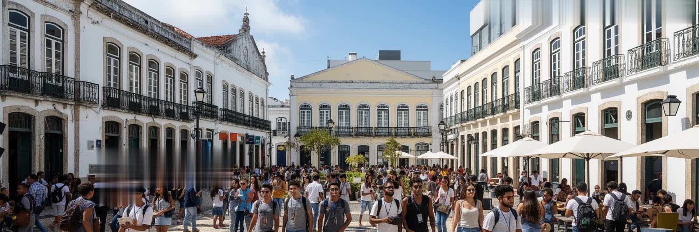
レシフェ・アンティゴの倉庫や歴史的建物の一部は、ポルト・デジタルとして情報技術、ゲーム、デザイン、スタートアップ、研究開発の拠点に転じました。大学、企業、行政、投資、文化施設が近距離で結びつき、北東部の若い技術者に地元で働く選択肢を作っている点は大きいです。旧港の再生は、歴史地区を単なる観光消費の舞台ではなく、新しい産業の場所として使い直す試みでもあります。ですが技術産業の成長は、都市全体の格差を自動的に解くわけではありません。プログラマーやデザイナーの職場の近くには、低賃金の清掃、警備、飲食、配達、ビル管理の労働があり、教育の質や英語、機材、通信環境の差は就業機会を分けます。再開発で家賃が上がれば、小さな店や住民が押し出されることもあります。ポルト・デジタルの価値は、きれいなオフィスの数ではなく、地元の学校、大学、公共空間、交通、住宅政策とつながり、技術の利益を広い住民へ返せるかにあります。レシフェの未来産業は、旧港の記憶と社会的な包容力を同時に問われています。技術者が都市を離れずに育つ環境は、大学の講義だけでなく、奨学金、公共インターネット、英語教育、女性や黒人学生への支援、通える交通によって支えられます。旧港の創造性が周辺地区とつながれば、技術産業は都市の分断を広げる力ではなく、学び直しと雇用の回路になり得ります。
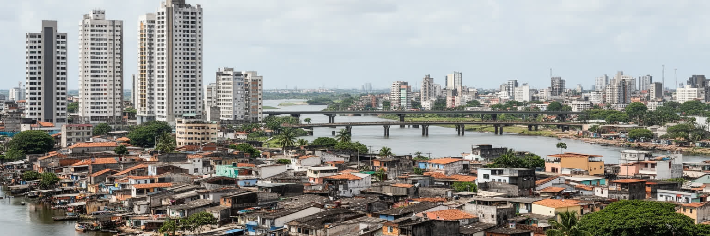
レシフェは市域が小さく人口密度が高いため、住宅の条件が都市経験を強く左右します。ボア・ヴィアージェンの海岸沿いには高層住宅とホテルが連なり、眺望、海風、商業施設への近さが不動産価値を高めます。一方、川沿い、低地、丘の斜面、郊外の密な住宅地では、排水、道路、学校、医療、治安、公共交通へのアクセスが不安定になりやすいです。橋や幹線道路は都市を結ぶが、渋滞と長いバス通勤は働く人の時間を奪います。住宅の格差は、部屋の広さだけではなく、雨の日に浸水しないか、夜に安全に帰れるか、子どもが学校へ通えるか、救急車が入れるか、家賃を払い続けられるかという生活の条件に現れます。観光客が海岸と旧市街を短時間で移動できても、住民の移動はもっと複雑で費用もかかります。不平等を読むには、高層建築の景観と、排水路沿いの暮らしを同じ都市として見る必要があります。住宅政策、斜面対策、交通、治安、雇用は別々の課題ではなく、レシフェで暮らし続ける権利を支える一つの基盤です。さらに住宅の不安は世代によって違います。若者は家賃と雇用に悩み、高齢者は階段や医療への距離に困り、子育て世帯は保育と通学を考えます。都市の包容力は、海岸の景観よりも、弱い立場の人が安全に住み続けられるかで測られます。家は住所である前に、学校、仕事、病院、近所へ届く足場です。住まいは尊厳そのものです。
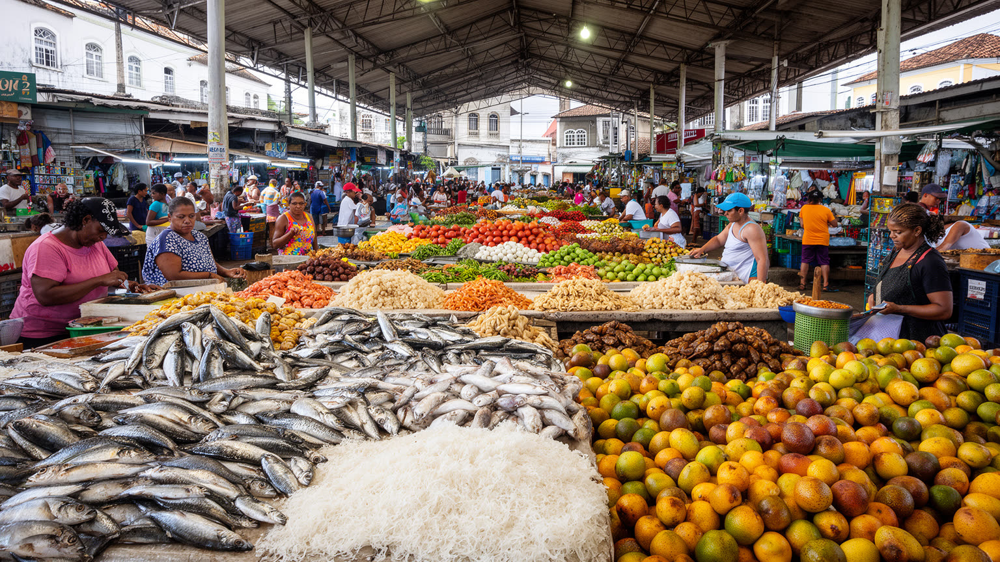
レシフェの食は、海、川、内陸の北東部、アフリカ系とポルトガル系の記憶を一皿に集めます。魚、エビ、カニ、干し肉、豆、キャッサバ、ココナツ、香辛料、甘い菓子は、市場、家庭、屋台、海岸の食堂で日常に変わります。旧市街やサン・ジョゼ市場のような場所では、食材、宗教用品、日用品、土産物、修理、近所の会話が混じり合い、観光より先に生活の流通が見えます。食文化は名物料理の名前だけでなく、誰が早朝に仕入れ、誰が火を使い、誰が路上で売り、誰が後片付けをするかで成り立ちます。海岸のレストランで食べる魚も、家庭で作る豆料理も、港、漁、冷蔵、道路、家族労働とつながっています。観光が食を有名にするほど、価格上昇や文化の表面化、働く人の不安定さも起こりうります。レシフェの味を読むことは、食べる楽しみと同時に、市場の手仕事、女性の労働、移民、宗教、暑さの中の衛生、低所得世帯の食費を考えることです。食は都市の記憶を香りで残し、日々の労働を支える燃料でもあります。市場はまた、都市の情報が集まる場所でもあります。値段、天候、漁の具合、祭りの予定、家族の近況が会話の中で流れます。清潔で整った観光施設だけでなく、湿った床、包丁の音、暑さ、値切り、常連の挨拶を見ると、レシフェの食が生活の制度として働いていることが分かります。食卓は、水辺と内陸、労働と祝祭をつなぐ小さな地図でもあります。
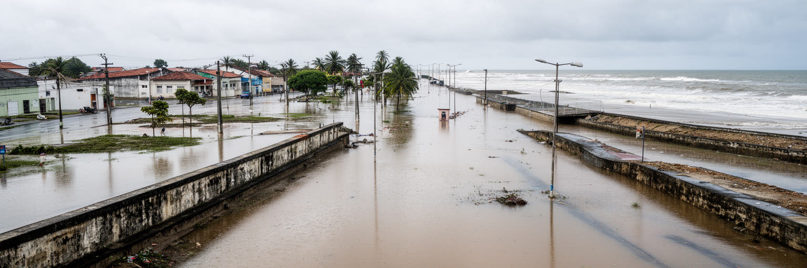
レシフェは熱帯海洋性の気候にあり、強い日差し、湿度、海風、長い雨季を日常としています。水と近い都市であることは魅力である一方、豪雨、河川氾濫、排水不良、潮位、海面上昇、海岸侵食を通じて大きなリスクにもなります。特に低地や斜面の住宅地では、雨が交通、学校、仕事、医療、家財、衛生を一度に乱します。気候危機は遠い未来ではなく、すでに通勤時間、家賃、保険、道路整備、学校休校、感染症、熱中症の問題として現れます。防災は堤防やポンプだけで完結しません。下水、廃棄物管理、斜面の植生、避難所、早期警報、多言語情報、低所得世帯への住宅改善、涼める公共空間が必要です。海岸の高級地区も、内陸の低所得地区も、水害と暑さから完全には逃れられないが、被害を受けた後に回復できる力には大きな差があります。レシフェの気候適応を読むことは、水辺を美しく保つことだけでなく、最も弱い住民が雨の日にも都市を使えるかを問うことです。水の都市は、備えの都市でなければ持続しません。気候対策は巨大工事だけでなく、日陰、街路樹、透水性の舗装、学校の避難訓練、地域の連絡網、公共トイレ、バス停の屋根にも宿ります。日常の小さな設備が、豪雨と猛暑のときに命を守る基盤になります。レシフェの未来は、水を排除するのではなく、水と共に暮らす技術を公平に広げられるかにかかっています。
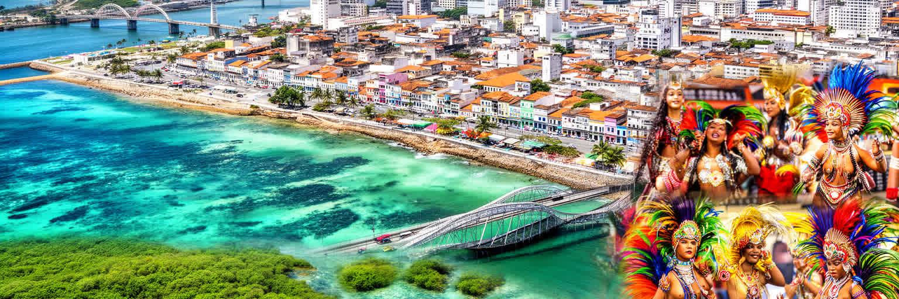
レシフェは、環礁と河口が作った港町であり、ブラジル北東部の行政、医療、教育、文化、技術産業を束ねる州都です。旧市街の橋、オリンダの丘、ボア・ヴィアージェンの海岸、ポルト・デジタル、マングローブ、フレヴォの路上、港の物流、低地の住宅は、一つの明るい観光イメージには収まらありません。植民地支配、砂糖経済、奴隷制、オランダ時代、共和国運動、黒人文化、カトリックとアフロブラジル信仰が、街の記憶を複層にしています。経済はサービスと情報技術へ広がるが、都市を支える多くの仕事は非正規で、通勤、家賃、治安、雨の影響を受けやすいです。レシフェを読む鍵は、水辺の美しさと社会の緊張を切り離さないことです。橋は都市を結ぶが、格差も見せます。海風は暑さを和らげるが、低地の洪水を消すわけではありません。祝祭は都市を誇らせるが、その準備と清掃には多くの労働があります。レシフェは完成したリゾート都市ではなく、水、歴史、文化、格差を毎日調整しながら生きる生活都市です。その複雑さこそが、世界都市として読む価値を持ちます。訪れる人にとって大切なのは、海岸や旧市街を別々の名所として消費するのではなく、港、学校、市場、バス、湿地、劇場、住宅地が同じ都市を支えていることを意識することです。そう見ると、レシフェは北東部の地域都市であると同時に、気候時代の水辺都市が抱える普遍的な課題を示しています。